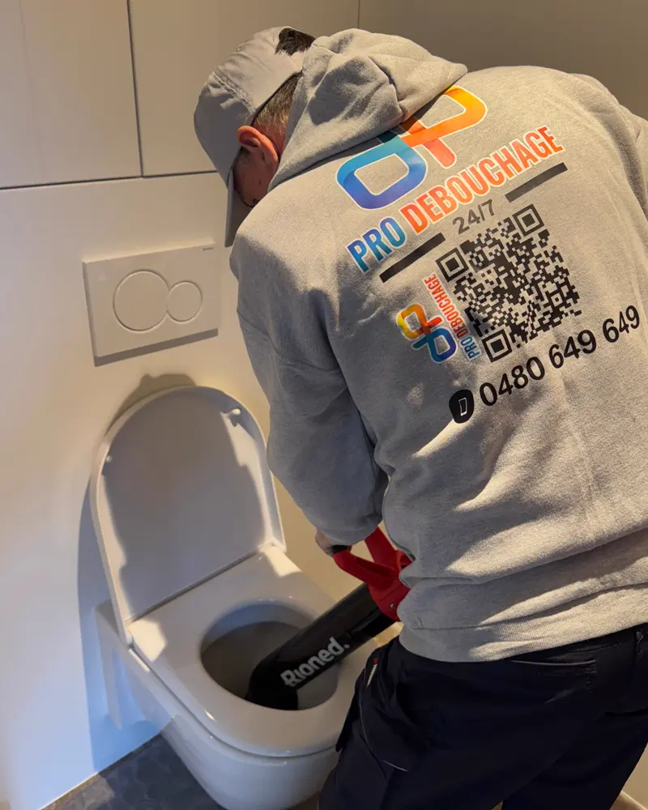
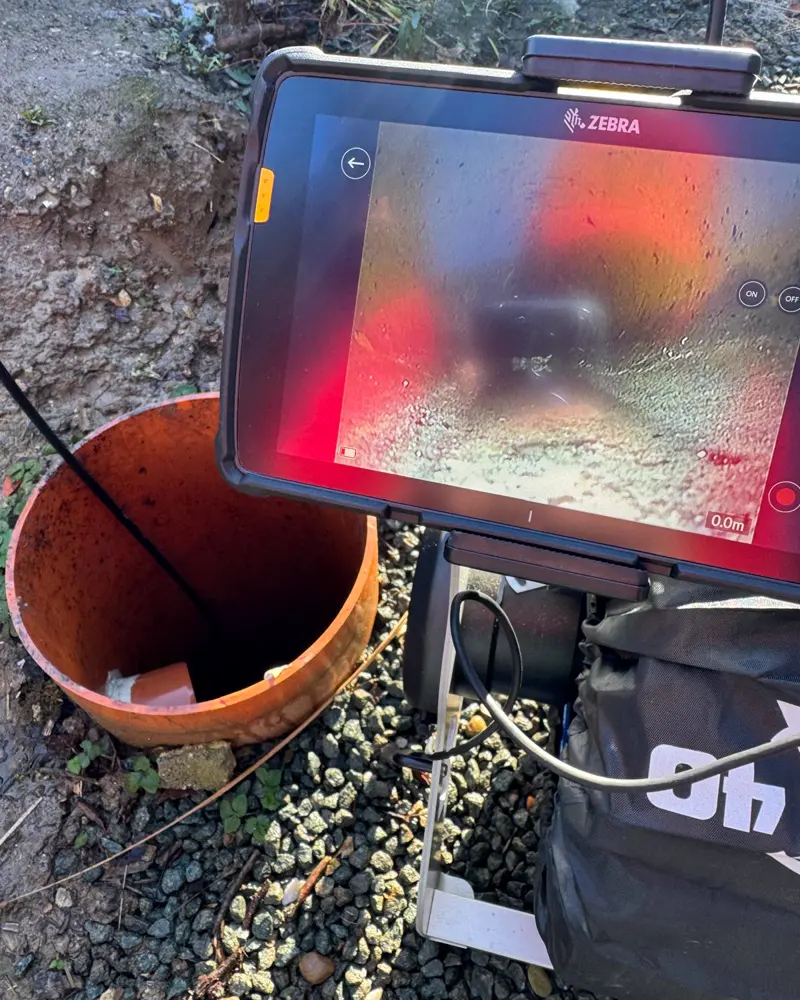

WC et évier bouchés
Le cas le plus fréquent. Souvent résolu en une seule intervention.
Ce que nous faisons

Le cas le plus fréquent. Souvent résolu en une seule intervention.

On filme l'intérieur du tuyau et vous regardez l'écran avec nous. Comprise avec l'intervention.
Pompage, nettoyage, et un rapport pour votre assurance si vous en avez besoin.